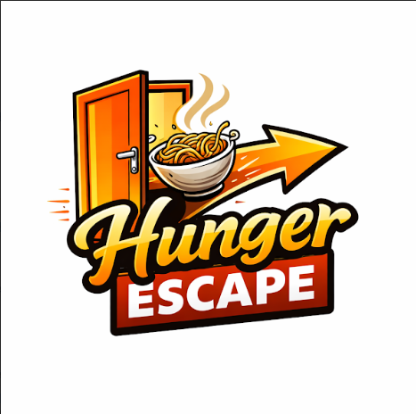

Welcome to your ultimate hostel food companion! 🍜
Living in a hostel doesn’t mean surviving only on boring meals or instant food. This website is specially made for hostelites who want to enjoy tasty, homemade food even with limited time, tight budgets, and basic equipment.
Discover quick, budget-friendly, and super easy recipes that anyone can make—no cooking skills required! From 5-minute snacks to satisfying meals, everything here is designed to be simple, delicious, and completely hassle-free.
No kitchen? No problem. Just a little creativity, a few ingredients, and you’re ready to cook up something amazing anytime, anywhere!
THIS IS MY WEBSITE